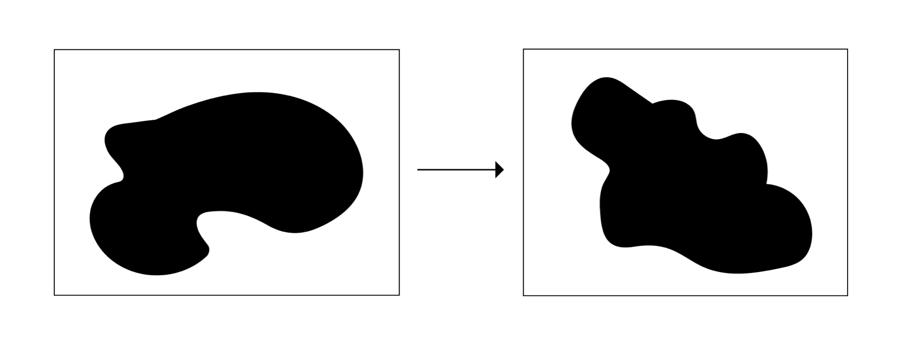
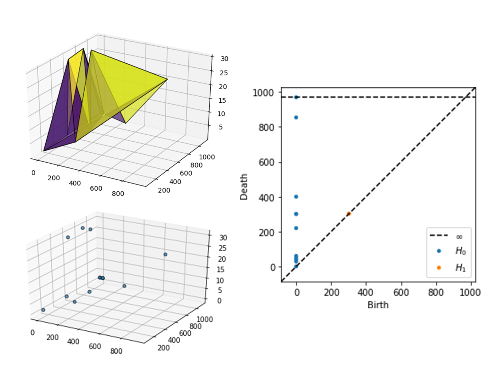

Searching for Persistence is the summation of a series of investigations that explore how mathematics can give structure to complex information using concepts from Topology. The discipline of Topology is focused on the study of geometric properties and spatial relationships that are unaffected by continuous change or deformation. In other words, the study of persistence. The digital kinetic forms generated throughout this research project are the manifestation of a new synthesis of methodologies for visualization that combines mathematics, art, and technology.
The purpose of this research is to expand on the tools that are currently in use for visualization. While there are many techniques, the majority focus on two-dimensional representations of simplified data. The techniques which have been employed throughout this process embrace a more spatial understanding of information that is represented in three-dimensional projections and forms. The primary advantage of spatial representation is that it gives information a tangible structure that allows for an analysis based on physical properties or behavior. This is an exciting notion that opens the door for future explorations of texture, density, and many other physical characteristics.
One of the driving questions behind this project is focused on how current mathematical tools can be incorporated into a design-centered process. Traditionally mathematics is presented in a standardized, uninspiring, and contextless manner which negatively affects the foundation of our relationship with the subject. When entering design or art school many assume that mathematics is a subject they will never have to approach again. This project sheds light on the exciting nature of applied mathematics when presented in a more creative context. It offers an example of how you can expand or enhance your practice through the incorporation of mathematics.
As stated in the introduction, Topology is defined as the study of geometric properties and spatial relationships unaffected by the continuous change of shape or size of figures. As such, the classic joke is that a topologist cannot tell the difference between a donut and a coffee cup. This is because the focus is much more granular than the appearance of the overall surface. The affordances of topological space allow for an exploration of surfaces through their properties instead of their appearances. Surfaces are described by the structure of the sets of points they are composed of rather than their overall form.
When looking into Topology one of the main concepts which I found intriguing was Homeomorphisms. A homeomorphisms is defined as a continuous transformation where the sets of points on two surfaces have a one to one correspondence and therefore are topologically equated. Due to the lack of metric or measure in topological space, the structure of the surface is defined by these sets of points. This is the root of the coffee cup joke.
An easy way to visualize this concept is to imagine a blob of stick putty or slime. When you first got the blob it was in the shape of a heart. You then push, pull, and stretch that same blob into a circle or some other fun shape. As long you you haven’t punctured, cut, or glued any part of the blob, those two forms are homeomorphic or topologically equivalent.
These concepts provide a new way of looking at three dimensional surfaces. Learning about the idea of homeomorphisms pushed me to think about forms in terms of their underlying structures and properties instead of how I might visually perceive them. Getting into the concepts of invariance, connectedness, boundaries, and transformation, things get even more interesting. These exciting notions could be employed in any number of art or design projects. The first set of experimental prototypes explores the visual representation of these concepts.
During the first half of this project, the approach for these prototypes was primarily focused on experimenting with different methods of producing homeomorphic surfaces and sets while learning more about topology along the way.
After identifying the subject matter for this project, this first prototype was dedicated to exploring pre-existing tools that could be used in the creation of homeomorphic surfaces. Since the rules of homeomorphisms state that there can be no cutting, puncturing, or gluing these animations demonstrate the seamless transition from one surface to another.
Using Cinema 4D, both a cube and a sphere were manipulated using built-in deformers that allowed for animation. This prototype confirmed a potentially useful mechanism for generating visual representations of homeomorphic surfaces with a pre-existing 3D tool.
The following prototype took a programmatic approach to the generation of homeomorphisms. Using sets of points, this prototype explored the subject through a two-dimensional lens. That is not to say that these points could not also move along the z-axis. Created using p5.js, this grid of sets conveyed the many possible ways these points could be organized while still maintaining topological equivalence. To maintain clarity, the central node of each set is anchored in the middle. This experiment made it clear that working in 3D would allow for the creation of more complex surfaces and transitions that express a sense of volume or surface.
In the previous prototypes, the generation of homeomorphisms had not been controlled or planned. What I mean by this is that for the sphere and cube there was no particular end result in mind when deformed and that the sets of points were randomly generated. For this experiment, the goal was to deform a surface with intention. The first step in this was determining what to use as the target surface. The chosen form was the Euler Spiral, also known as the Cornu Spiral because a curve is an intuitive shape to transition to from a sphere. After experimenting with the different methods of transformation in the last prototypes, this one returned to Cinema4D. Another goal of this prototype was to explore the visual identity and framing of these deformations. This iteration was set in a gallery-style scene in order to convey the fact that this is meant to be seen as a type of sculpture, not simply a contextless animation. The metallic texture created reflections that emphasize the form well.
After the end of the first round of research and prototyping I began considering more options for input to define surfaces and so I looked toward data. My research led me to Topological Data Analysis or TDA. TDA is, as its name describes, a method of data analysis which uses techniques from Topology. This type of data analysis is particularly useful for high-dimensional, noisey, or incomplete data sets.
When it comes time to analyze a data set, the shape of that data set matters in choosing the modeling method. For example linear regression for a line, clustering for points, and so on. The advantage of TDA is that it’s a modeling method that works for all shapes that can be computed easily.
This is important in this time of big data where the information that needs to be analyzed is complex and comprehensive. TDA has been used in the analysis of sound, text, precision medicine, and much more. The value of this methodology, even more so than other modeling methods, is in its ability to reveal connections and patterns that aren’t immediately present. One specific technique within TDA that is particularly good at this is Persistent Homology.
Persistent Homology is a method for computing topological features at different resolutions. It is the process of the creation of simplicial complexes from different sized radii around each point in the data set. When the radii overlap a link is drawn between the corresponding points. When they intersect they are also recorded on a diagram which keeps track of the birth and the death of each of these features. The purpose of this is to identify those that persist throughout each level of scale. Examples of topological features that we would be keeping track of include components, clusters, and holes of different dimensions.
Identifying these features allows us to clearly define the structure of a data set. Defining the structure gives us insight into the behavior and properties of the data.
After completing this second bit of research, I began to experiment and develop my own methodology which is a synthesis of Python based TDA tools. I chose to use a data set from Information is Beautiful which contained the records of various data breaches throughout the last few decades. This data set is probably incomplete but still works for my purposes. While I am including an explanation of this data, I want to keep the focus on the tools themselves and less so on what is being modeled since this is still an experimental methodology.
The images on the right are from the analysis of one year of this data. To create these graphs I first cleaned up the data, separated it by year, and chose three variables which were representative of the scale and quality of the event which they corresponded to. Through the use of the Python libraries Scikit-TDA/Ripser.py and Matplotlib I generated these images. The top left and bottom left are 3D plottings of the data with and without triangular polygons. These represent the distribution in space. The TDA takes place in the generation of the diagram on the right. This is a persistent homology diagram which, as described in the TDA research section, keeps track of the features which are present in the 3D plotting of the data, specifically holes. As you can see the axes are the birth and death of each feature.
The next step for this project is to take the form of data, as described by these persistent homology diagrams, and bring it back into the context of homeomorphisms. What this means is that if I have a data set and I've identified its structure as that of a torus, I can then say that it will behave the same as if it took the form of a coffee mug.
The final presentation of this project is as a web “book” (which you are reading now). It reads horizontally to imitate the experience of reading a book and serves as documentation of this research and prototyping process. As the goals of this project are centered around making mathematics more approachable and reimagining methods of visualization, creating a web book gives perpetual access to viewers and allows me to continue to update my work. I hope that this will operate not only as a display of my achievements but also as a sort of manual for others. As a research project based in experimentation it is also extremely important to document the details of the methods and outcomes.
I had planned to have rendered animations of the surfaces developed through TDA as well. This project was slowed down dramatically due to the circumstances resulting from the current pandemic. I had hoped to have made further progress by this point but regardless I will be continuing my research and experimentation after this exhibition.
I have learned a tremendous amount while conducting this research and exploring the capabilities of Topology. Not only have I gained an understanding of Topology itself, but also an insight into how it can be applied or incorporated into design practices. While some knowledge of programming is necessary for the use of the tools I have used, the existence of libraries and software lessens the barrier for entry. As I continue to develop this project and expand my research, I will be able to draw more conclusions about the effectiveness of these methods.
The next steps will include exploring other TDA techniques and translating those into more kinetic forms. This project is by no means finished, especially due to the circumstances that we have found ourselves in. I have only scratched the surface of these topics and I plan to continue this work when I am able to.